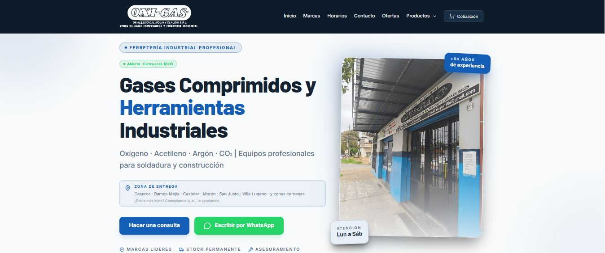

OxigasWeb
Ferretería industrial con más de 60 años en el rubro. Catálogo de gases comprimidos y herramientas conectado a Supabase, con cotización y contacto directo por WhatsApp, cubriendo 6 zonas de entrega en el oeste del GBA.
React 18ViteSupabaseTailwind